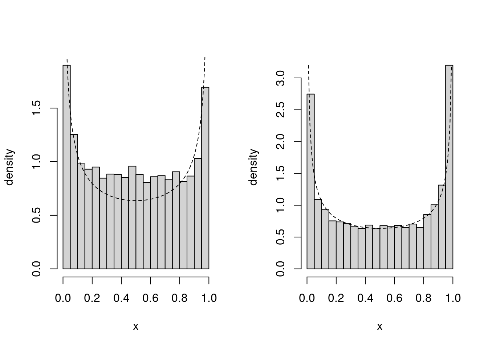

Consider the Laplace family of distribution, \(\mathsf{Laplace}(\nu, \tau)\), with density \[\begin{align*}
g(x; \nu, \tau) = \frac{1}{2\tau} \exp\left(- \frac{|x-\nu|}{\tau}\right), \qquad \nu \in \mathbb{R}, \tau > 0
\end{align*}\] as a candidate distribution for rejection sampling from \(\mathsf{Gauss}(0,1)\).
Provide an inversion sampling algorithm to generate from \(\mathsf{Laplace}(\nu, \tau)\).
Can you use the proposal to generate from a standard Gaussian? for Student-\(t\) with 1 degree of freedom? Justify your answer.
Consider as proposal a location-scale version of the Student-t with \(3\) degrees of freedom. Find the optimal location and scale parameters and the upper bound \(C\) for your choice.
Use the accept-reject to simulate 1000 independent observations and compute the empirical acceptance rate.
Solution.
The distribution function is \[\begin{align*}
F(x) = \begin{cases}
\frac{1}{2} \exp\left(\frac{x-\nu}{\tau}\right) & x \leq \nu\\
1 - \frac{1}{2} \exp\left(-\frac{x-\nu}{\tau}\right) & x >\nu\\
\end{cases}
\end{align*}\] and using the quantile transform, set \(X=\nu + \tau \log(2U)\) if \(U \leq 0.5\) and \(X=\nu - \tau\log(2-2U)\) if \(U > 0.5\) for \(U \sim \mathsf{unif}(0,1)\).
The Gaussian has lighter tail than the Laplace, so this won’t work. The Cauchy distribution would be a suitable candidate, albeit too heavy tailed.
The optimal value for the location of the Student-\(t\) would be \(\nu\) (e.g., zero for the standard Laplace). We compute the optimal scale via in the code below: \[
\mathrm{argmin}_{\sigma \in \mathbb{R}_{+}}\mathrm{argmax}_{x \in \mathbb{R}} \{\log f(x) - \log g(x; \sigma)\}
\]
#' Laplace densitydlaplace <-function(x, loc =0, scale =1, log =FALSE){stopifnot(scale >0) logdens <--log(2*scale) -abs(x-loc)/scaleif(log){return(logdens) } else{return(exp(logdens)) }}dstudent <-function(x, loc =0, scale =1, df =1, log =FALSE){ logdens <--log(scale) +dt(x = (x - loc)/scale, df = df, log =TRUE)if(log){return(logdens) } else{return(exp(logdens)) }}# For each value of the scale sigma,# find the minimum value of x (typically at zero)opt <-optimize(f =function(sigma){optimize(f =function(x){dlaplace(x, log =TRUE) -dstudent(x, scale = sigma, df =3, log =TRUE)}, maximum =TRUE, interval =c(-100, 100))$objective}, interval =c(0.1,10))(C <-exp(opt$objective))
[1] 1.261368
(sigma <- opt$minimum)
[1] 0.9272381
# Simulate from accept-rejectntrials <-1.1*C*1000# Simulate from location-scale studentcandidate <- sigma*rt(n = ntrials, df =3)# Compute log of acceptance ratelogR <-dlaplace(candidate, log =TRUE) -dstudent(candidate, scale = sigma, df =3, log =TRUE) samp <- candidate[logR >=log(C) +-rexp(ntrials)]# Monte Carlo estimator of the acceptance ratentrials/length(samp)
The Monte Carlo acceptance rate is 1.26, compared with the analytical bound found via numerical optimization of 1.26, to two significant digits.
Exercise 4.2
We revisit Exercise 2.3, which used a half-Cauchy prior for the exponential waiting time of buses.
The ratio-of-uniform method, implemented in the rustR package, can be used to simulate independent draws from the posterior of the rate \(\lambda\). The following code produces
nobs <-10L # number of observationsybar <-8# average waiting timeB <-1e4L # number of draws# Un-normalized log posterior: scaled log likelihood + log priorupost <-function(x){ dgamma(x = x, shape = nobs +1L, rate = nobs*ybar, log =TRUE) +log(2) +dt(x = x, df =1, log =TRUE)}post_samp <- rust::ru(logf = upost, n = B, d =1, # dimension of parameter (scalar)init = nobs/ybar)$sim_vals # initial value of mode
Estimate using the independent Monte Carlo samples:
the probability that the average waiting time \(1/\lambda\) is between 3 and 15 minutes
the average waiting time
the standard deviation of the average waiting time.
Next, implement a random walk Metropolis–Hastings algorithm to sample draws from the posterior and re-estimate the quantities. Compare the values.
Solution.
# Monte Carlo for waiting time# Lambda is the reciprocal mean (1/minute)times_mc <-1/post_samp# Mean of binary variables + std. errorp <-mean(times_mc >3& times_mc <15)c(est = p, se =sqrt(p*(1-p)/B))
est se
0.977900000 0.001470088
# Posterior mean with standard errorc(est =mean(times_mc), se =sd(times_mc)/sqrt(length(post_samp)))
est se
8.02353960 0.02676175
# Metropolis-Hastings algorithmB <-1e4Lcurr <-8/10# prior meanchains <-numeric(B) # containersd_prop <-0.1# proposal standard deviationfor(b inseq_len(B)){ prop <-rnorm(n =1, mean = curr, sd = sd_prop)if(upost(prop) -upost(curr) >-rexp(1)){ curr <- prop } chains[b] <- curr}# Discard burn-intimes <-1/chains[-(1:100)]# Estimate quantities using Monte Carlomean(times >3& times <15)
[1] 0.9770707
mean(times)
[1] 8.074385
sd(times)
[1] 2.743424
# Summary of MCMCmcmc <- coda::mcmc(times)summary(mcmc)
Iterations = 1:9900
Thinning interval = 1
Number of chains = 1
Sample size per chain = 9900
1. Empirical mean and standard deviation for each variable,
plus standard error of the mean:
Mean SD Naive SE Time-series SE
8.07439 2.74342 0.02757 0.05848
2. Quantiles for each variable:
2.5% 25% 50% 75% 97.5%
4.406 6.167 7.580 9.382 14.785
We can see that the standard error for the mean is roughly twice as big. We would thus need to inflate the sample size by a factor four to get the same precision.
Solution 4.3
Consider the following code which implements a Metropolis–Hastings algorithm to simulate observations from a \(\mathsf{beta}(0.5, 0.5)\) density.
log_f <-function(par){dbeta(x = par, shape1 =0.5, shape2 =0.5, log =TRUE)}metropo <-function(B, sd_prop =0.2){ chain <-rep(0, B)# Draw initial value cur <-runif(1)for(b inseq_len(B)){repeat {# Simulate proposal from Gaussian random walk proposal prop <- cur +rnorm(1, sd = sd_prop)# check admissibility for probability of successif (prop >=0& prop <=1)break }# Compute (log) acceptance ratio logR <-log_f(prop) -log_f(cur) # Accept the move if R > uif(isTRUE(logR >log(runif(1)))){ cur <- prop } chain[b] <- cur }return(chain)}# Run MCMC for 10K iterationsmc <-metropo(1e4L)
To see if the algorithm works:
Plot the density of the Markov chain draws along with the beta density curve.
Check that empirical moments match the theoretical ones
If the algorithm is incorrect, provide a fix and explain the reason for the problem.
Solution. The sampler is incorrect because it tacitly draws from Gaussian variables that are restricted to \([0,1]\) via the accept-reject step. This means in particular that the acceptance ratio involves constants for the probability given a Gaussian centered at the current value or proposal truncated on the unit interval \[\frac{q(x^{\text{cur}\hphantom{c}} \mid x^{\text{prop}})}{q(x^{\text{prop}} \mid x^{\text{cur}\hphantom{c}})} = \frac{\Phi\{(1-x^{\text{cur}})/\sigma^{\text{prop}}\} - \Phi(-x^{\text{cur}}/\sigma^{\text{prop}})}{\Phi\{(1-x^{\text{prop}})/\sigma^{\text{prop}}\} - \Phi(-x^{\text{prop}}/\sigma^{\text{prop}})}.\]
This exercise was inspired by this blog post by Darren Wilkinson.
log_f <-function(par){dbeta(x = par, shape1 =0.5, shape2 =0.5, log =TRUE)}metropo_fixed <-function(B, sd_prop =0.2){ chain <-rep(0, B)# Draw initial value cur <-runif(1)for(b inseq_len(B)){repeat {# Simulate proposal from Gaussian random walk proposal prop <- cur +rnorm(1, sd = sd_prop)# check admissibility for probability of successif (prop >=0& prop <=1)break }# Compute (log) acceptance ratio logR <-log_f(prop) -log_f(cur) +log(pnorm(1, mean = cur, sd = sd_prop) -pnorm(0, mean = cur, sd = sd_prop)) -log(pnorm(1, mean = prop, sd = sd_prop) -pnorm(0, mean = prop, sd = sd_prop))# Accept the move if R > uif(isTRUE(logR >log(runif(1)))){ cur <- prop } chain[b] <- cur }return(chain)}# Run MCMC for 10K iterationsmc2 <-metropo_fixed(1e4L)

Figure 1: Comparison of histogram for 10K draws from the incorrect sampler (left) and the correct sampler (right).